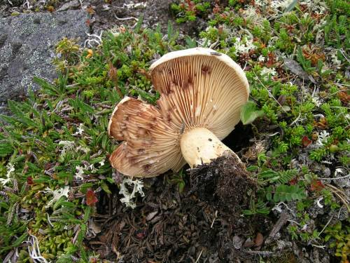

Sopp
|
|
|
Entoloma cremeoalbum er ein ny
art for vitskapen som er funnen nokre plassar i Oppdal
2006-2010. Biletet viser ein del av typematerialet
fotografert i grasmark på Aunsetra i Oppdal (Sør-Trøndelag)
saman med Perry G. Larsen 30.08.2010. Artikkel med
publisering av arten vart trykt i desember 2010 og kan
lesast
her.
|
|
|
|
Den nybeskrivne arten Entoloma
cremeoalbum vart første gong funnen i naturbeitemark på
Nervika i Oppdal (Sør-Trøndelag) i august 2006, biletet er
tatt her 11.09.2006.
|
|
|
|
Under ei vekelang soppsamling i
Hattfjelldal, vart plommekølle Clavaria greletii
(VU)
forevist på tidlegare kjent veksestad i kalkrik høgstaudeeng
i Holmvassdalen, Grane (Nordland) av Jostein Lorås
31.08.2010. Denne arten har få funn i Noreg.
|
|
|
|
Stankraudskivesopp Entoloma
nausiosme (DD) har ei kraftig, ubehageleg lukt, forevist av
Machiel Noordeloos i kalkrik høgstaudeeng i Holmvassdalen,
Grane (Nordland), 02.09.2010. Dette var truleg fjerde funnet
i landet.
|
|
|
|
Kalkmosehatt Gerronema (=Cantharellopsis)
prescotii vart funnen i kalkrik høgstaudeeng i
Holmvassdalen, Grane (Nordland) 31.08.2010.
|
|
|
|
Inocybe tricolor er ein sjeldan, kalkkrevande trevlesopp som vart
funnen under ein ekskursjon i kalkfuruskog i Hattfjelldal
(Nordland) 01.09.2010. Dette er andre funnet i landet.
|
|
|
|
Karstraudskivesopp Entoloma
excentricum (VU) er ein kalkkrevande beitemarkssopp som er
funnen i kalktørrenger nokre stader i landet, her på Helle i
Nordherad, Vågå (Oppland) 23.08.2010 som ein del av
ARKO-prosjektet.
|
|
|
|
Grå småfingersopp Clavulinopsis
cinereoides (NT) er ein sjeldan beitemarkssopp, her fotografert på
Aunsetra, Oppdal (Sør-Trøndelag) 30.08.2010.
|
|
Sandjordtunge Geoglossum arenarium
er ein nokså sjeldan sekksporesopp som veks saman med
krekling i open sandrik jord. Her er han avbilda i sandrik
naturbeitemark ved Vigdelsanden i Sola (Rogaland)
23.09.2010. |
|
|
|
|
|
Raudnande lutvokssopp Hygrocybe
ingrata (VU) er ein beitemarkssopp som er nokså sjeldan, og
finst oftast i gamle, ugjødsla og artsrike naturbeitemarker.
Her er han funnen på Negardssetra ved Vognill, Oppdal
(Sør-Trøndelag) 17.08.2010 i ARKO-prosjektet.
|
|
|
|
Revekjuke (tidlegare brun ospekjuke)
Inonotus rheades er ei kjuke med ei søraustleg utbreiing
i Noreg. Her er eitt av få funn på Vestlandet, på ei ospelåg
i Årosåsen i Sokndal (Rogaland) 27.09.2010.
|
|
 |
|
Reinroseriske Lactarius dryadophilus
veks som namnet tyder på saman med reinrose. Biletet er teke
på Gjevilvasskamman i Oppdal (Sør-Trøndelag) så tidleg som
31.07.2010.
|
|
|
|
Ramaria flavescens er ein av
mange store, kjøttfulle korallsoppar som veks i kalkskog, og
som no vert utgreia i eit eige prosjekt. Biletet er teke ved
Grova i Liabygda, Stranda (Møre og Romsdal) under
haustsopptreffet 12.09.2010, og bestemt av Ilkka Kytövuori
(meddelt av Tor Erik Brandrud). |

Planter
|
Handmarinøkkel Botrychium lanceolatum (NT) vart funnen på
ein kjent lokalitet, Nordre Strondsætra i Vågå i
ARKO-prosjektet 22.08.2010. |
|
|
|
|
|
I Storfjorden på Sunnmøre vart det
funne fleire fine slåttemarker, m.a. her på Kilsti i
Eidsdal, Norddal kommune 20.07.2010, med brudespore
Gymnadenia conopsea og
prestekrage Leucanthemum vulgare.
|
|
|
|
Biletet viser ein art i hårsvæve-gruppa
som kanskje heiter bakkesvæve Hieracium moechiadium, funnen i
gammal slåttemark på Nedre Ljøen, Stranda (Møre og Romsdal).
Truleg same art vart funnen fleire stader i Storfjorden på
Sunnmøre i 2010. Mange artar i denne gruppa er truga av
endringar i det moderne kulturlandskapet.
|
|
|
|
Finnmarkssiv Juncus arcticus
fotografert på ein vårtur i Grøvudalen, Sunndal (Møre og
Romsdal) 06.06.2010, dette er kanskje einaste plassen i Møre
og Romsdal at denne plantearten veks.
|
|
|
|
Fjellnøkleblom Primula scandinavica
(NT)
fotografert på ein vårtur i Grøvudalen, Sunndal (Møre og
Romsdal) 06.06.2010.
|
|
|
|
Svartkurle Nigritella nigra (EN) vart
ettersøkt i m.a. Oppdal (Sør-Trøndelag) som ledd i ei
handlingsplan for arten. Ein god bestand vart funnen i
fjellet ved Orkelkroken aust i kommunen 16.07.2010, på ein
tidlegare kjent lokalitet.
|
|
|
|
Firtann Teucrium scorodonia har
ei lita utbreiing i Agder-fylka og Rogaland, her fotografert
på ei berghylle i beita utmark på Årosåsen i Sokndal
(Rogaland) 27.09.2010.
|
|
|
|
Ullurt Logfia arvensis (NT) er ein
tørrengart som finst mest i dalstroka på Austlandet. Biletet
er teke på Søre Blessom i Vågå 23.08.2010 som ledd i
ARKO-prosjektet.
|
|
|
|
Engtjæreblom Viscaria vulgaris
er ein tørreng- og tørrbergart med sparsam førekomst i Møre
og Romsdal. Her er han avbilda i ein vegkant i Fjørå,
Stranda kommune 17.06.2010. |

Mosar
|
|
|
Praktdraugmose Anastrophyllum
donnianum (VU) er ein sjeldan oseanisk mose som finst nord
til Eide på Nordmøre. I 2010 vart det lagt ut
overvåkingsfelt her, i Ørsta og i SF Flora. Biletet er frå
Endestadnipa i Flora. Perry G. Larsen og Dag Holtan har
gjort mange nye funn på Sunnmøre i 2010.
|
|
|
|
Gullhårmose (Breutelia chrysocoma)
vart funnen saman med Perry G. Larsen i store mengder i
fosserøyksonen ved den nordvendte fossen Friaren i
Geirangerfjorden 10.08.2010. Denne arten har ei oseanisk (kystbunden)
utbreiing, og er sjeldan så langt inn i landet. |
Lav
|
|
|
Eikelav Flavoparmelia caperata
(NT)
har ei sørleg utbreiing langs kysten av Sørvestlandet men og
i dalane på Austlandet. Biletet er teke ved Lauvåsen i
Sokndal (Rogaland) 30.09.2010.
|
|
|
|
Grå punktlav Punctelia subrudecta
(EN)
er ein sjeldan, sørleg-oseanisk (kystbunden) lavart med få
funn i landet (Sørvestlandet). Biletet er teke på ein ny
lokalitet, ein sumpskog langs ein bekk ved Nesvåg, Sokndal
(Rogaland) 24.09.2010 (kontrollbestemt av Tor Tønsberg). |